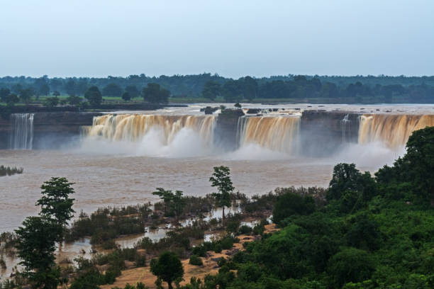
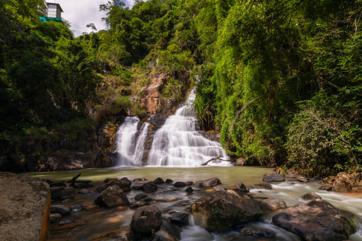
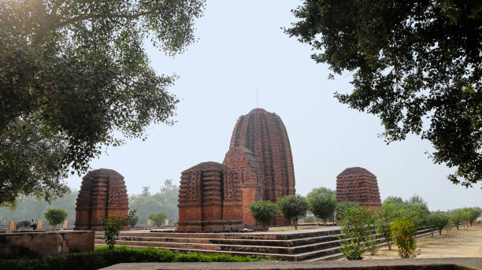
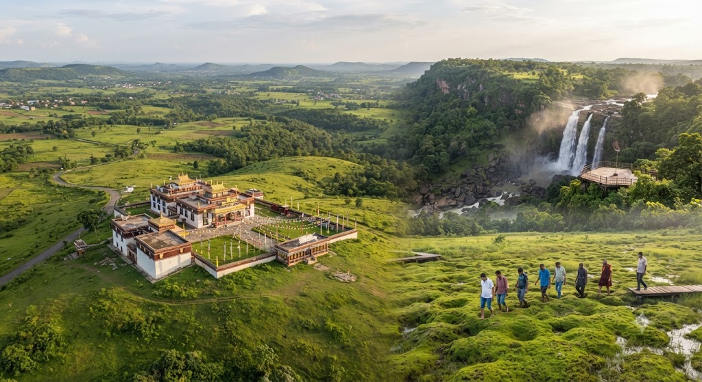
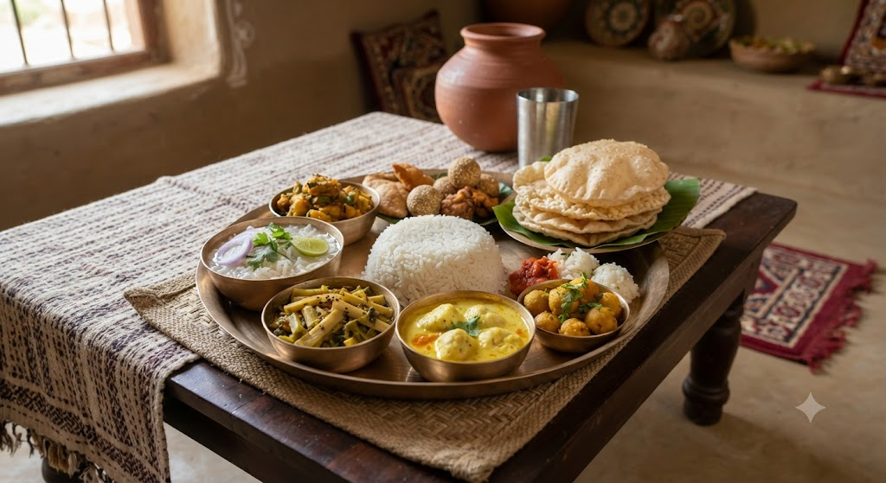

01
Chitrakote Falls
The Niagara of India — a magnificent 300-meter-wide horseshoe waterfall cascading dramatically off the Indravati river gorge in Bastar.

Discover the land of cascading horseshoe waterfalls, ancient Sal canopy rainforests, timeless Gond and Baiga tribal arts, and pristine archaeological heritage.
Explore Chhattisgarh ↓Chhattisgarh is an enchanting, heavily forested central state, celebrated for its 44% forest cover, ancient Dhokra bell metal artisans, and vibrant indigenous traditions.
From the thunderous roar of Chitrakote Falls on the Indravati River and the sacred 75-day festival of Bastar Dussehra to the ancient Buddhist monastery ruins of Sirpur and the cool Tibetan hill sanctuary of Mainpat, Chhattisgarh offers a deeply authentic offbeat journey.
Monumental waterfalls, indigenous tribal hubs, archaeological gems, and hill retreats across Chhattisgarh.

The Niagara of India — a magnificent 300-meter-wide horseshoe waterfall cascading dramatically off the Indravati river gorge in Bastar.

The cultural heartland — famous for Kanger Valley National Park, Kutumsar limestone caves, and ancient Dhokra bell metal craft villages.

An ancient archaeological treasure on the Mahanadi River, featuring the 7th-century brick Laxman Temple and vast Buddhist Viharas.

The Shimla of Chhattisgarh — an idyllic plateau featuring Tibetan monasteries, bouncing earth phenomenon (Jalpari), and Tiger Point falls.
Chhattisgarhi cuisine is wholesome, nutritious, and deeply rooted in forest forage — featuring aromatic rice flour crepes, steamed lentil dumplings, and indigenous spices.

Ancient tribal lineages of Gonds, Baigas, and Marias living in deep ecological harmony with their sacred Sal forests and customs.
A world-famous 75-day tribal congregation dedicated to Goddess Danteshwari, marked by the pulling of massive handcrafted wooden chariots.
A 4,000-year-old lost-wax bell metal casting technique shaping exquisite tribal figurines, deer, elephants, and deities.
Acrobatic pyramid dances of the Satnami community (Panthi) and the joyous warrior folk dances (Raut Nacha) of the Yadav clans.
Discover all 28 states, local food specialties, and centuries of living traditions.
← Back to All States